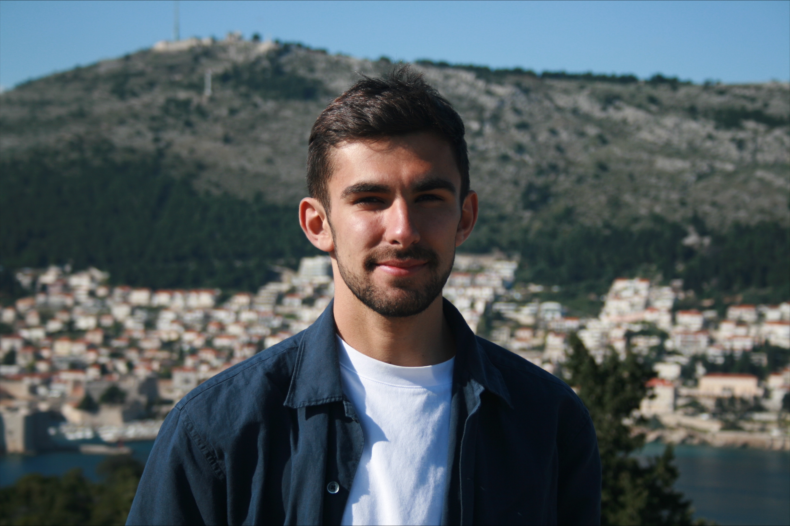

Jack Johnson
DPhil Student
Nuffield Department of Medicine
University of Oxford
About
After graduating with a BSc in Physics from the University of Birmingham, Jack worked as a Nuclear Medicine Physics Technician at University Hospitals of Leicester NHS Trust. Alongside his clinical duties, he conducted research into the application of neural networks for kidney function estimation. His abstract, "Exploration of a Neural Network Approach to Glomerular Filtration Rate Estimation", won the Young Investigators Scientific Prize at the British Nuclear Medicine Society Spring Meeting in 2024.
He subsequently completed an MSc in Medical Physics with Radiobiology at the University of Oxford. His research project focused on deep learning model fusion strategies for automatic tumour lesion segmentation in PET/CT, and he was awarded the Course Prize for the best overall performance in his cohort.
Jack is currently undertaking a DPhil in Biomedical Data Science (Clinical Medicine) under the supervision of Dr Tingyan Wang. His research focuses on the early prediction of liver cirrhosis and its complications using multimodal AI.
Outside of research, Jack is a keen long-distance runner and has been awarded Full Blues in cross country and athletics at Oxford.
Research Interests
Jack's research interests include machine/deep learning, artificial intelligence, LLMs, and agentic AI in real-world clinical data, and the development of computational methods to improve patient care and health literacy.
Please see our Research page for further details.